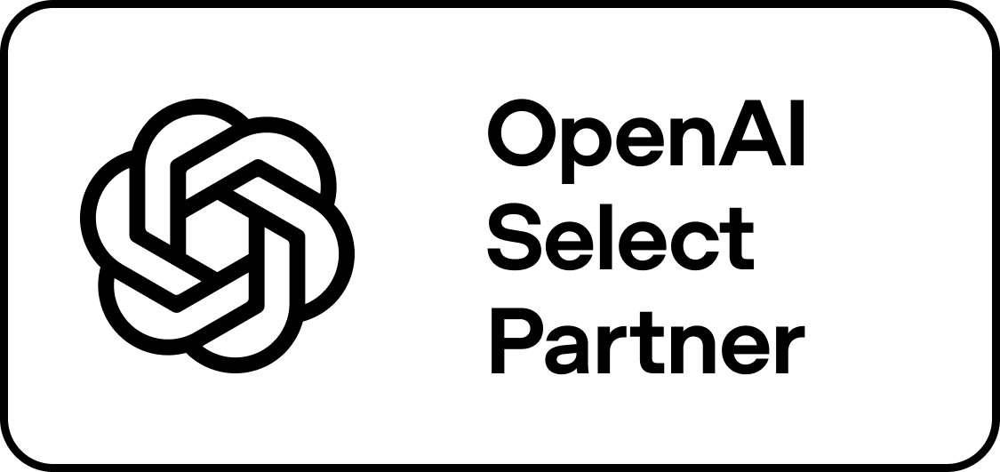

PROFUNDIDADE
Não ensinamos hacks ou listas de prompts. Ensinamos fundamentos para entender e construir com AI.
THE AI BUILDER SCHOOL
A GPT Experts é uma formação prática para profissionais que querem dominar o ChatGPT e aprender a construir agentes, automações, workflows e aplicações capazes de executar trabalho real.
A NOVA CAMADA DE TRABALHO
Durante muito tempo, construir software, automatizar processos ou criar sistemas inteligentes exigiu equipes técnicas altamente especializadas. Isso está mudando.
Hoje, profissionais conseguem pesquisar, analisar dados, automatizar processos, construir agentes e desenvolver aplicações utilizando inteligência artificial como uma nova camada de execução.
A vantagem não está mais apenas em saber usar AI.
Está em saber o que construir com ela.
A TRANSFORMAÇÃO
Um caminho estruturado para sair do uso superficial do ChatGPT e desenvolver capacidade real de construção com inteligência artificial.
Você usa AI.
Pergunta, pesquisa, escreve e executa tarefas pontuais.
Você incorpora AI ao seu trabalho.
Cria projetos, skills e workflows profissionais.
Você constrói.
Cria agentes, automações, integrações e aplicações.
Você transforma problemas em soluções.
Identifica oportunidades, desenha sistemas e gera valor utilizando AI.
O PROGRAMA
O AI Builder Program desenvolve progressivamente sua capacidade de trabalhar e construir com inteligência artificial.
Não é necessário começar sabendo programar. O objetivo é terminar sabendo transformar uma ideia ou problema em uma solução funcional utilizando AI.
Modelos, contexto, prompting, pesquisa, arquivos, projetos, análise de dados e as principais capacidades da plataforma.
PARA PARAR DE UTILIZAR AI COMO UM MECANISMO DE BUSCA.
Projects, Skills, estruturas reutilizáveis e workflows profissionais.
PARA INCORPORAR AI PROFUNDAMENTE AO SEU TRABALHO.
APIs, webhooks, automações e integração entre ferramentas, dados e inteligência artificial.
PARA CONSTRUIR WORKFLOWS QUE EXECUTAM TAREFAS REAIS.
Instruções, contexto, ferramentas, memória, integrações, guardrails e human-in-the-loop.
PARA CRIAR AGENTES CONFIÁVEIS PARA PROBLEMAS REAIS.
AI e ferramentas como Codex para desenvolver interfaces, aplicações, dashboards, ferramentas internas e produtos.
PARA DESENVOLVER CAPACIDADE REAL DE CONSTRUÇÃO.
Identificação de oportunidades, mapeamento de processos, desenho de soluções, pilotos e medição de impacto.
PARA IMPLEMENTAR AI PROFISSIONALMENTE.
Posicionamento, demonstração, narrativa de valor e apresentação da solução para clientes, equipes e decisores.
PARA COMUNICAR O VALOR DO QUE VOCÊ CONSTRUIU.
Você não termina apenas sabendo mais sobre inteligência artificial.
Você termina sabendo construir com ela.
GPT EXPERTS
Não ensinamos hacks ou listas de prompts. Ensinamos fundamentos para entender e construir com AI.
O aprendizado acontece através de problemas, projetos e implementações próximas do mundo real.
O objetivo é desenvolver autonomia para criar soluções, além de consumir ferramentas.
Uma comunidade de profissionais interessados em construir e trabalhar profundamente com inteligência artificial.
PARA QUEM
GPT Experts foi criada para profissionais que perceberam que inteligência artificial será uma nova camada de trabalho.
Para profissionais que enxergam inteligência artificial como oportunidade de transição profissional.
Marketing, financeiro, produto, vendas, operações ou dados. Você não precisa abandonar sua experiência. Pode multiplicar o valor dela.
Para quem quer transformar conhecimento em agentes, automações, ferramentas e aplicações.
AI não precisa substituir sua experiência profissional.
Ela pode multiplicá-la.
QUEM ESTÁ POR TRÁS
AI Entrepreneur
Sócio da Copybase
OpenAI Select Partner
Especialista em implementação de ChatGPT e agentes de AI para empresas

Meu trabalho é transformar problemas reais de negócio em sistemas construídos com inteligência artificial.
Ao longo da minha trajetória, acompanhei de perto a evolução da AI generativa, participei da construção de negócios nesse mercado e passei a implementar agentes, automações e aplicações dentro de empresas.
A GPT Experts nasce dessa experiência: uma formação para desenvolver a capacidade de identificar um problema e construir uma solução com AI.
MANIFESTO
Inteligência artificial está reduzindo a distância entre uma ideia e sua execução. Uma pessoa pode pesquisar, analisar dados, automatizar processos, construir agentes e desenvolver software utilizando linguagem natural. A GPT Experts existe para formar profissionais capazes de operar nesse novo ambiente.
FAQ
Não. A formação começa pelos fundamentos e evolui progressivamente até automações, agentes e desenvolvimento de aplicações utilizando AI como ferramenta de construção.
Não. ChatGPT é o ponto de partida, mas o programa evolui para workflows, automações, agentes, integrações e construção de aplicações.
Para profissionais que querem entrar no mercado de AI, aumentar sua capacidade na profissão atual ou aprender a construir produtos, serviços e soluções utilizando inteligência artificial.
Não. A filosofia da GPT Experts é aprender construindo, combinando fundamentos com projetos e aplicações práticas.
Não. Profissionais de marketing, vendas, operações, financeiro, produto, consultoria e outras áreas podem desenvolver capacidade de construção com AI.
GPT EXPERTS
A próxima geração de profissionais já está aprendendo a construir com inteligência artificial.
Não apenas usar ferramentas. Construir com elas.
Deixe seus dados para receber as informações de inscrição.